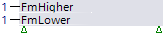
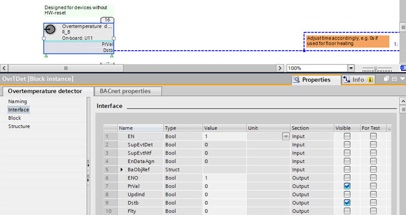
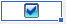
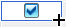
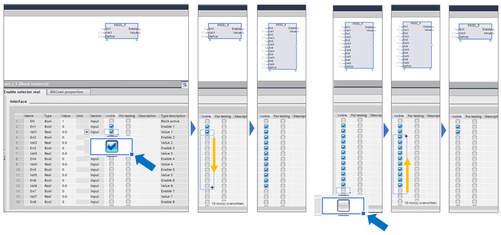

显示和隐藏图钉
块底部的绿色三角形表示某些引脚被隐藏。您可以选择哪些引脚可见。

Show and hide pins
- In the Programming editor, select an element.
- Open the Properties tab.
- Open the Properties tab of the selected element.
- Click Interface and select or clear the check boxes in the Visible column, for example, PrVal and Dstb.

Multi-selection of pins
- Select the status or .
- Select the blue point of the rectangular

. - Drag the blue point

up or down to the desired destination.
- All selected check boxes are active or cleared.
